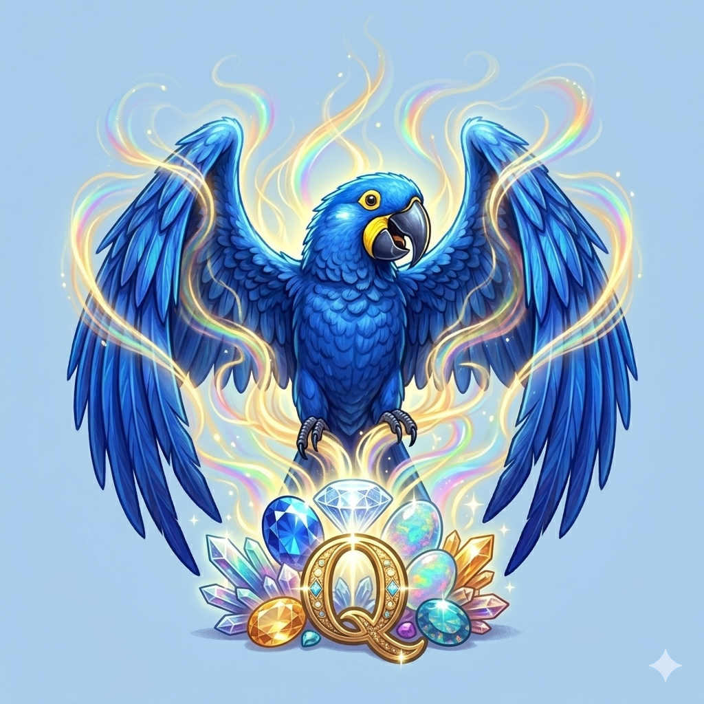

Desafios de Engajamento no 1º Q
📅 3 de Junho de 2026 — Nossa jornada de criação inicia...
Durante a explicação dos conceitos iniciais de HTML, enfrentamos dificuldades para reter a atenção de uma parte significativa da turma. O principal desafio pedagógico agora será criar estratégias mais dinâmicas para resgatar o interesse desses alunos e integrá-los à atividade prática do blog.
Mais do que ensinar linhas de código, o ambiente escolar exige o aprendizado da convivência e do respeito mútuo. A persistência de conversas paralelas, mesmo após intervenções, sinaliza a necessidade de trabalharmos a escuta ativa e a postura cidadã com os estudantes.📅 10 de Junho de 2026 — Nossa jornada de criação continua e a sala do 1° Q se transformou em um verdadeiro laboratório de design...
Nossa jornada de criação continua e a sala do 1° Q se transformou em um verdadeiro laboratório de design! Hoje, o desafio foi dar personalidade ao nosso site, explorando cores de fundo, estilos de letras e ajustes de margens. Enquanto alguns alunos pegaram o ritmo rápido e estão super empolgados vendo suas ideias tomarem forma na tela, outros ainda enfrentam a confusão natural dos primeiros códigos e acabam se dispersando um pouco. Essa mistura de sentimentos faz parte do processo, e o mais importante é que, entre acertos e ajustes, cada um está descobrindo como deixar sua marca digital neste projeto!
📅 Resumo de Códigos Básicos: Guia Rápido de HTML
Para ajudar todo mundo a colocar a mão na massa no laboratório, aqui está o nosso guia de sobrevivência HTML. Use essas tags para estruturar o seu site!
<h1>até<h6>: 🏷️ Títulos e subtítulos. O<h1>é o principal e maior da página.<p>: ✍️ Parágrafo de texto comum.<strong>: ⚠️ Deixa o texto em negrito para dar destaque.<em>: ✨ Deixa o texto em itálico para dar ênfase.<ul>: 📋 Cria uma lista com marcadores (bolinhas).<ol>: 🔢 Cria uma lista numerada automática (1, 2, 3...).<li>: 🔹 Cada item individual de uma lista (deve ficar dentro de ul ou ol).<br>: ↩️ Quebra de linha simples (não precisa de tag de fechamento).
💡 Dica de ouro: Lembre-se sempre de abrir a tag <tag> e fechar no final do texto usando a barra </tag>!
📅 16 de Junho de 2026 — No 1° Q, ainda enfrentamos alguns desafios de disciplina em sala de aula, lidando com muitas conversas paralelas durante as explicações. Apesar disso, a turma vem demonstrando uma evolução gradual. Atualmente, o grupo se encontra dividido: de um lado, temos estudantes extremamente atentos e focados, que estão avançando rapidamente com muita criatividade nos códigos; do outro, uma parcela que ainda está dando os primeiros passos e descobrindo a base da programação. O foco agora é equilibrar esses ritmos para que todos consigam evoluir juntos no projeto!
📅 23 de Junho de 2026 — O dia de hoje foi de muita evolução técnica e descoberta para o 1° Q. Aprendemos a inserir imagens diretamente no HTML e a realizar as primeiras formatações visuais nelas, além de explorarmos a tecnologia de inteligência artificial com a geração de imagens no Nano Banana. No aspecto da disciplina, a turma demonstrou uma postura geral bem melhor em comparação com as semanas anteriores, embora ainda falte respeito e foco por parte de alguns alunos nas explicações. Seguimos trabalhando para alinhar a convivência e potencializar a criatividade que o grupo tem de sobra!
💡 Dica de Web Design: Como centralizar imagens com CSS
Muitas vezes, quando usamos a propriedade text-align: center; no CSS, ela funciona muito bem para textos, mas não mexe na nossa imagem. Para resolver esse problema de forma isolada e deixar o nosso mascote perfeitamente no meio da página, aprendemos um truque muito importante!
img {
width: 400px;
height: 400px;
display: block; /* Transforma a imagem em bloco */
margin: 0 auto; /* Alinha os lados automaticamente */
}
🛠️ Entendendo as propriedades:
display: block;: Por padrão, as imagens ficam na mesma linha dos textos. Ao mudar para bloco, dizemos ao navegador que a imagem deve ocupar a sua própria linha exclusiva no site.margin: 0 auto;: O valorautoindica para o navegador calcular o espaço restante nas laterais esquerda e direita de forma igual, empurrando o elemento exatamente para o centro da tela.
Agora que dominamos esse truque, nossos layouts vão ficar muito mais organizados e profissionais! Testem nos seus projetos individuais e vejam a mágica acontecer.
📅 30 de Junho de 2026 — Fechamos o mês com o 1° Q mostrando marcos bem distintos no nosso projeto de programação. Uma parte excelente da turma já concluiu e entregou com sucesso a primeira tarefa prática: a construção do blog contendo três postagens completas, uma imagem e a estrutura do <body> devidamente organizada com as tags <header> e <main>. Por outro lado, outra parcela do grupo ainda enfrenta desafios técnicos básicos para avançar, tendo dificuldades para sair do ambiente do GitHub e conseguir abrir e clonar o projeto no VS Code. Nosso foco agora será realizar uma força-tarefa de apoio para ajudar esses estudantes a superarem essa barreira inicial de ferramentas!
💻 Guia Rápido: Comandos e Atalhos Práticos do VS Code
Para ajudar a turma a mexer mais rápido no editor de código e otimizar o tempo no laboratório, aqui estão os principais atalhos que facilitam a vida:
Ctrl + S: 💾 Salva o arquivo atual (fundamental antes de testar no navegador!).Ctrl + Z: ↩️ Desfaz a última alteração (errou o código? Use esse comando para voltar).Ctrl + Shift + X: 🧩 Abre a aba de extensões (onde instalamos o Live Server).Ctrl + B: 📁 Esconde ou mostra a barra lateral de arquivos para ganhar espaço na tela.Ctrl + F: 🔍 Abre a barra de pesquisa para localizar qualquer palavra ou tag no código.Alt + Z: 🔄 Quebra as linhas de texto longas automaticamente para não precisar rolar a barra lateral.
📋 Tabela de Controle de Entregas — Primeira Tarefa
Confira abaixo os critérios de avaliação e o status da primeira entrega do projeto (Blog com Header, Main, 3 Posts e 1 Imagem):
| Componente do Grupo / Aluno | Estrutura Básica | 3 Postagens | Imagem Inserida | Status Final |
|---|---|---|---|---|
| Grupo Exemplo A | ✔️ Ok | ✔️ Ok | ✔️ Ok | CONCLUÍDO |
| Grupo Exemplo B | ✔️ Ok | ⏳ Pendente | ❌ Faltando | EM ANDAMENTO |
💡 Estudantes que estão com status "Em Andamento": aproveitem o início da próxima aula no laboratório para tirar dúvidas sobre a transição GitHub ➡️ VS Code e finalizar os itens pendentes!